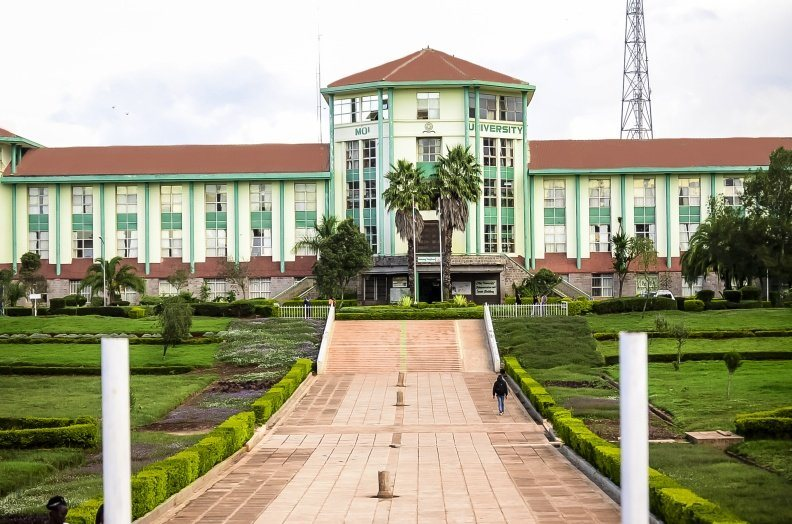

About and leadership
Partners, program leadership, advisory boards and past coordinators.
Archive of the program website
The overarching goal of the Data Science for Social Determinants (DSSD) pre- and post-doctoral training program is to develop future leaders in data science who are equipped to develop and analyze data to better leverage deep and rich survey as well as Internet and other digitized data sources that can help us capture information on the social determinants of health. Such data can provide unique illumination into factors on where we live, work, and play which can be used to better understand and address health disparities across noncommunicable disease, infectious disease and injuries in the Kenyan context.
The program leverages excellent international standard biostatistics and informatics faculty and programming at Moi alongside advanced data science coursework at NYU.
Our vision is to expand the base of local expertise and capacity in data science by developing Masters and PhD data science tracks at the Institute for Biomedical Informatics and Biostatistics programs at Moi within 5 years.
Continuing education opportunities and networking will also occur through workshops bringing together experts in health and data science in Kenya and surrounding countries. Programs will be evaluated annually by our Internal Advisory Board and Training Advisory Committee.

Partners, program leadership, advisory boards and past coordinators.
The four annual workshops from 2022 to 2025, with slides and photos.
The social determinants working group, its members and the data index.
The six faculty trainees and their bios.